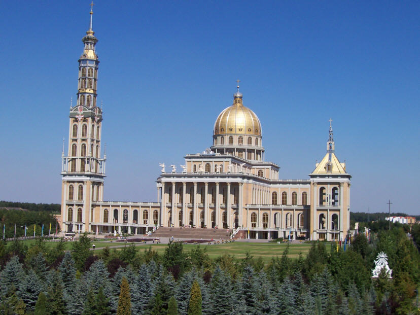
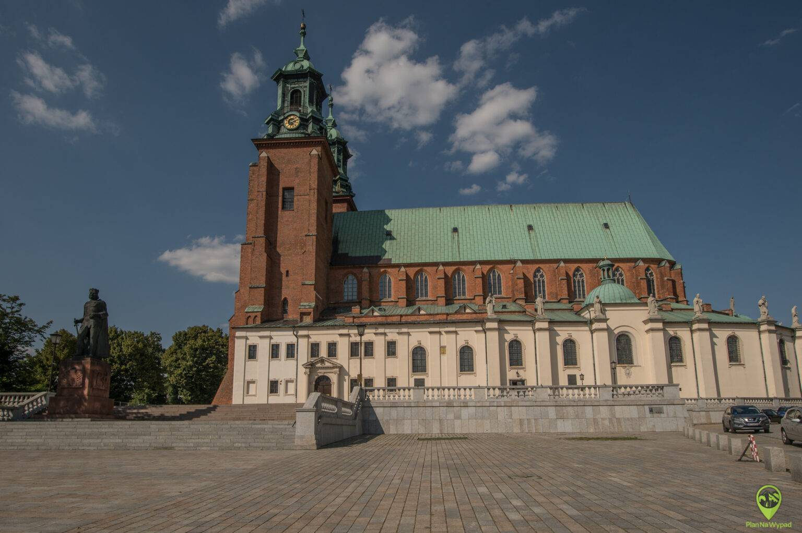

Województwo wielkopolskie, położone w zachodniej części Polski, jest regionem o bogatej historii i wyjątkowym znaczeniu dla początków państwa polskiego. Jego stolicą jest Poznań – jedno z najstarszych i najpiękniejszych miast w kraju. Turyści mogą odwiedzić zabytkowe miasta, malownicze jeziora oraz liczne parki krajobrazowe. Szczególną atrakcją jest Szlak Piastowski, prowadzący przez miejsca związane z narodzinami Polski. Wielkopolska łączy ciekawe dziedzictwo kulturowe z atrakcyjnymi terenami do aktywnego wypoczynku.

